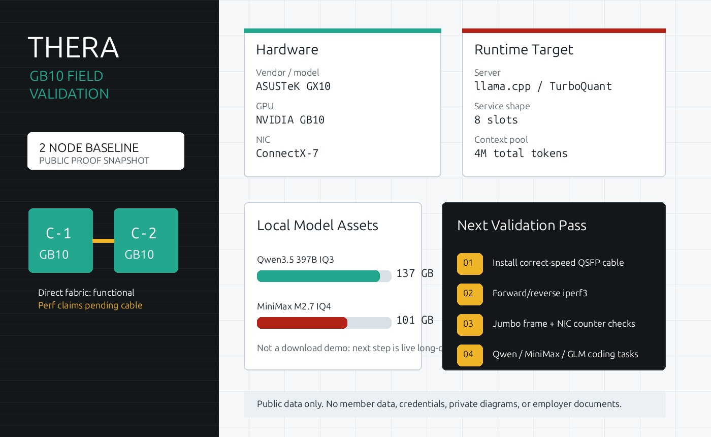

Two personally purchased GB10 nodes, real inference data, and kernel work already underway.
This is a local validation effort around ASUS GX10 / NVIDIA GB10 systems for long-context coding agents. The first two nodes are already in hand. The publishable record now includes single-unit GPT-OSS 120B results, Qwen3-Coder-Next APEX/TurboQuant serving data, and kernel tuning findings from the GB10 runtime path.

Current public proof
Evidence Worth Sharing
These numbers come from local artifacts and run logs on the GB10 workstream. Private network addresses, receipts, serial numbers, and employer-sensitive material are intentionally excluded from the public version.
ASUS GX10-class nodes are already local and under direct operator control.
Qwen3.5-397B IQ3 plus MiniMax M2.7 IQ4 are present on disk today.
AIME25 score from a 240-sample local run against GPT-OSS 120B high effort.
Aggregate tok/s at npl=8 in the single-GB10 raw batched decode sweep.
Current two-node Qwen target: 8 slots sharing a 4M-token context pool.
Correct-speed QSFP cable is still required before final fabric claims.
Hardware
Local GB10 Cluster State
The public record can identify the class of hardware and current local roles without publishing private LAN details.
| Field | Public value |
|---|---|
| Primary GB10 host label | thera128gx10-1 |
| Second GB10 host label | thera128gx10-2 |
| Vendor / model | ASUSTeK COMPUTER INC. GX10 |
| GPU class | NVIDIA GB10 / sm_121 |
| OS baseline | Ubuntu 24.04.4 LTS, arm64, NVIDIA 580-series driver |
| High-speed fabric device | Mellanox / NVIDIA ConnectX-7 class NICs reported locally |
| Management path | Normal LAN management stays separate from the direct GB10 fabric |
Single-unit baselines
Measured Inference Data Already On Disk
The strongest publishable numbers are the single-GB10 baselines because they do not depend on the pending fabric cable.
GPT-OSS 120B on GB10
| Measurement | Recorded value | Why it matters |
|---|---|---|
| Live implementation audit | 63 tok/s batch-1 decode |
Confirms a working GPT-OSS 120B lane on one GB10-class system. |
| Model memory | 64.02 GiB MXFP4 |
Shows the 120B MoE fits comfortably inside the 128GB unified-memory envelope. |
| KV cache headroom | 42.46 GiB, about 1.24M tokens |
Useful prior for long-context budgeting on the larger two-node models. |
| llama.cpp bench | 2443.91 pp2048 t/s, 58.72 tg32 t/s |
Independent bench surface for prompt processing and decode speed. |
| AIME25 local eval | 0.925 score over 240 samples |
Functional eval data exists, not just synthetic throughput numbers. |
Qwen3-Coder-Next APEX/TurboQuant on One GB10
| Measurement | Recorded value | Why it matters |
|---|---|---|
| Model asset | Qwen3-Coder-Next-APEX-I-Quality.gguf, 50,390,241,280 bytes |
Known-good single-unit APEX model used for local runtime bring-up. |
| Verified serving geometry | 262656 context, 3 slots, 87552 tokens per slot |
Concrete long-context serving shape, not a short demo prompt. |
| Single-request decode | About 46.88 tok/s at 32K context |
Baseline user-facing speed for one active request. |
| Three concurrent requests | About 31.34 tok/s per stream at 262656 total context |
Relevant to planner, implementor, and auditor agents sharing the box. |
| Raw batched decode sweep | 98.46 tok/s aggregate at npl=3, 141.46 tok/s aggregate at npl=8 |
Backend ceiling before OpenAI-compatible server overhead. |
| Repeated-run audited lane | 35.07 tok/s average decode, about 105.2 tok/s aggregate at 3-way |
Median-of-5 result survived the audit pass better than the earlier single-run winner. |
Kernel/runtime engineering
Kernel Tuning Findings We Can Release
The kernel work is valuable because it records negative results. It rules out easy switches and narrows the next real optimization target.
| Experiment or finding | Measured result | Engineering conclusion |
|---|---|---|
| Raw baseline for Qwen3-Coder-Next kernel tuning | speed_tg = 90.19 tok/s on the pp128/tg128/pl3 reproducer |
This is the direct backend baseline for selector-level experiments. |
| Disable MMQ globally | Raw 90.73 tok/s; live decode 31.36 vs baseline 31.38; live prompt t/s regressed from 162.40 to 66.96 |
MMQ yes/no is not the real lever. The live path needs a narrower kernel edit. |
| Disable stream-k globally | Same reproducer exceeded 6m20s and was terminated; expected baseline was about 2m36s |
stream-k is required on the current branch. Disabling it is not a viable tuning path. |
| Nsight direction | Hot work remains around quantized mul_mat_q paths and small-K MoE-shaped kernels |
The next acceptable edit needs occupancy and launch evidence from Nsight Compute. |
| TurboQuant decode path | Active profile uses K=q8_0, V=turbo2; the q8_0 K path is already compact integer-dot math |
The safer first target is the mixed VEC decode path and on-the-fly turbo2 V dequantization, not broad cache-format changes. |
| GB10 Blackwell constraint | sm_121 is not datacenter Blackwell; no WGMMA/tcgen05 assumptions |
Optimizations must be written for the actual GB10 ISA and memory hierarchy. |
Two-node model work
Current Model Assets And Target Shape
The two-node work is where the next public benchmark will land once the fabric is validated with the correct cable.
| Asset or target | Current value | Status |
|---|---|---|
| Qwen3.5-397B-A17B UD-IQ3_S | 137G on disk |
Primary two-node long-context candidate. |
| MiniMax-M2.7 UD-IQ4_XS | 101G on disk |
Smaller challenger for coding-agent speed and intelligence testing. |
| Combined model storage | 238G for the two current large model assets |
Both fit on disk for side-by-side testing. |
| Qwen two-node serving target | 8 slots, 4M total-token context pool |
Working target from the current combined-node workstream. |
| System reserve | 20GB per node reserved for OS and stability in public planning | Internal testing tolerated lower free-memory levels, but public claims should keep headroom. |
Next validation pass
Concrete Benchmark Plan
The next run should produce data that matters for agent work, not short prompt theater.
-
01
Install the correct-speed QSFP cable.
Do not hard-code the link at 40G. Let the NICs negotiate, then record link speed, MTU, and NIC counters.
-
02
Run forward and reverse fabric tests.
Capture
iperf3both directions, jumbo-frame checks if MTU 9000 is valid, and error/drop/FEC counters before and after sustained load. -
03
Run the same long-context coding tasks on Qwen and MiniMax.
Use real repositories, multi-file modification tasks, long context, and 8-slot subagent pressure. Record correctness, completion behavior, time-to-first-token, decode throughput, queue behavior, memory, and failures.
-
04
Publish the kernel/runtime deltas with same-condition evidence.
Only keep kernel changes that improve the direct backend and the managed OpenAI-compatible service without output corruption or prompt-throughput regression.
Hardware sponsorship
What Permanent Hardware Unlocks
A third GB10 turns this from a point-to-point proof into the three-node ring topology NVIDIA documents for small GB10 clusters. A fourth node makes Q3/Q4 tradeoffs and failover behavior worth measuring seriously.
One permanent ASUS GX10 / NVIDIA GB10-class validation node plus the cable needed to join the fabric.
Two permanent GB10-class nodes plus a compatible QSFP high-speed switch or fabric kit.
Setup notes, fabric diagnostics, reproducible llama.cpp/TurboQuant launch configs, model fit tables, kernel findings, and long-context coding benchmarks.
Public tasks use public repos, synthetic infrastructure tasks, redacted examples, or purpose-built test repos. No member data, credentials, private diagrams, or employer confidential material.